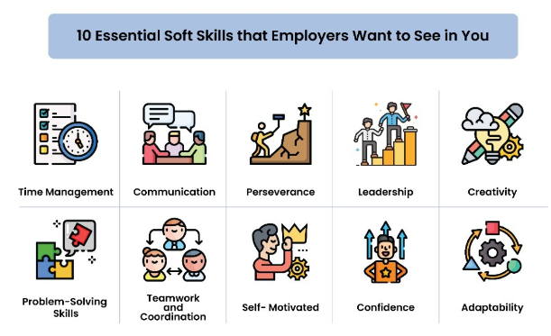
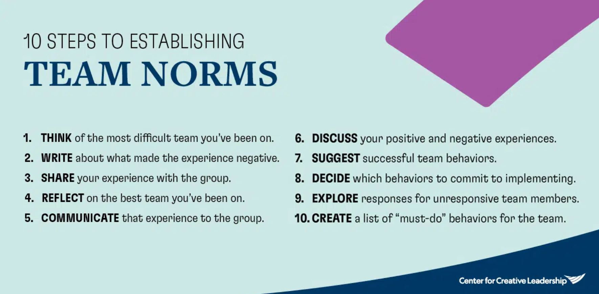

Module 1: Group Dynamics
An overhead shot of a group of students collaborating around a table. Image Source
1.2 Group Logistics and Dynamics
Estimated Completion Time for this Section: 60 minutes
Topics Covered in 1.2
1.2.1. Tuckman’s stages of group development (MLO 1)
1.2.2. Establishing group roles (MLO 1)
1.2.3. Managing timelines (MLO 1)
1.2.1. Tuckman's Stages of Group Development
"There's a group project," is not something that many students like to hear about a course. I get it. I wasn't a fan of group work myself when I was in school. So then, why are we making you do group work in this course?
For better or for worse, students need to learn how to navigate teams--especially group conflict (which we will address in detail in 1.3). It is almost guaranteed that you will have to work with other people at some point in your careers. Even as a professor (a job where professors often struggle with feeling too isolated), group/team work is necessary.
It was, in fact, necessary for the design of this very course.
Employers are looking not just for employees who possess a solid knowledge-base of the skills and concepts related to their industry, but they are also looking for the "soft skills" that make a productive and collaborative employee:

10 Essential Soft Skills that Employers Want to See in You: time management, communication, perseverance, leadership, creativity, problem-solving, teamwork & coordination, self-motivated, confidence, adaptability.
Image Source
The good news is that strategies for successful group work can be learned. The goal over the next several weeks is to help you to build a repertoire of skills and strategies that will give you the best odds of success in collaborative projects. There's never a guarantee (we all have to deal with jerks in the workplace), but there are way that you can prevent and mediate conflict.
Step one is the understand the stages of team/group development (I will use the terms team and group interchangeably throughout this module). And for that, we are going to turn to the Tuckman Stages of Group Development.
TUCKMAN'S STAGES OF GROUP DEVELOPMENT
The current version of this framework is derived from Bruce Tuckman's original 1965 theoretical model, which had four stages of group development (you can read about the original model in depth ):
- Forming
- Storming
- Norming
- Performing
Simply put, the premise of Tuckman's model is that groups will--to varying degrees--go through a typical pattern or stages of behaviour when they come together as a team for the first time. And yes, for the record, adding or taking away a person "resets" this model, since the group dynamics must be renegotiated.
Over the years, Tuckman's model has been adapted and expanded, with people adding and renaming stages to help deepen our understanding of group dynamics and processes. Check out the following video (00:11:09), which discusses some of these shifts:
Typically, when people refer to Tuckman's model now, they refer to an adapted version that has five stages of group/team development:

Tuckman's Five Stages of Team Development
- Forming: The group "comes together." Group roles may be formally or informally established. Goals and objectives are clarified and an initial plan of action is formed.
- Storming: The team discovers that there are personality conflicts, concerns about the plan, differences in expectations, etc. This stage may be quick and relatively simple (ex. a disagreement over a minor issue), or it can become a full-blown conflict amongst group members.
- Norming: The group works to resolve conflict and "get onto the same page." This stage is critical because groups that do not navigate it successfully will struggle in the next stage, often resulting in a breakdown of the group altogether or in select individuals shouldering more of the work.
- Performing: The team optimizes itself and produces results and deliverables.
- Adjourning: The group debriefs, reflects, assesses, and disbands.
Tuckman's model is famous and helpful because it normalizes the struggles that groups face. Every group can expect to face some sort of conflict (even if it's just the internal struggle or resentment of one team member). But, by normalizing the experience, Tuckman's model also offers us room to anticipate and prepare for conflict.
1.2.2. Establishing Group Roles
One of the way in which we can prevent or minimize conflict in groups is by assigning clear group roles and by establishing group norms. By setting these up early in the Forming stage, groups create expectations and procedures for navigating any concerns or issues that may arise.
WHAT ARE GROUP ROLES?
Group roles are the various jobs for which different members are responsible. There is no "official" way to define group roles, but for the purposes of this course and specifically, this group work project, we are going to use the following:

Group Roles
REPRESENTATIVE: Represents the group.
Hint: This person should have initiative and be a good problem-solver.
-
-
- Speaks with the professor about any questions/concerns on behalf of the group
- Mediates conflict resolution amongst group members
- Ensures the roles set out in the group contract are maintained
- Guardian of group norms
-
LOGISTICS COORDINATOR: Keeps things organized.
Hint: This person should be very organized and a clear communicator.
-
-
- Leads group discussions (synchronously or asynchronously)
- Facilitates weekly progress emails
- Keeps track of group member tasks and coordinates deadlines
- (Re)assigns/(re)delegates tasks when necessary
-
RECORD KEEPER: Maintains the group's information and records (including providing any records that may be requested by the professor).
Hint: This person should be comfortable with technology and managing larger amounts of information.
-
-
- Takes notes/meeting minutes
- Responsible for the group's collaboration space (Google Docs or whatever system your group is using)
- Copied on all emails sent by the Representative to the professor or by the Coordinator to the group member
- Manages the group chat and saves chat logs
- Manages the multimedia portion of the project
-
QUALITY DIRECTOR: Responsible for making sure what the group produces is up to the group's standards.
Hint: This person should be meticulous with an eye for detail.
-
-
- Makes sure that sources are credible and cited properly
- Keeps track of the instructions and progress for each stage of the project
- Does a final review of any group submissions
- Breaks any deadlocks on how the project should move forward or content should be developed
-
By establishing that everyone has a clear role within the group, some of the Storming issues around individual-group identities can be avoided. This strategy also gives a reasonable amount of authority to each individual, which encourages accountability to the group at large. It is helpful to have an informed understanding about your own preferred work style, so that the delegation of group roles can be done in a way that optimizes people's strengths.
.png)
Understanding Your Group Work Style
When it comes to group work, we all have areas of strength and areas for improvement. Our preferred or natural work styles will influence not only how we fit into and work with a group, but how others work with us.
Complete the attached Work Styles Inventory to get a better sense of the dynamics that you bring to a group setting. We will return to this inventory in 1.3.
GROUP NORMS
Group norms are the rules, behaviours, goals, and procedures that inform how a group works together. Norms will influence how you interact and collaborate. Successful group norms have several characteristics:
-
- They are negotiated and mutually agreed upon by all members of the group
- They are concrete and actionable
- They are adaptive and evolve in response to the group's needs
- Used at a tool for resolving conflict
- They are memorable
- They are upheld and referred to consistently and equitably by all group members
Below is a short video (00:04:26) that discusses how to establish, maintain, and develop group norms:

10 Steps to Establishing Team Norms: think of a challenging team experience; write about the experience; share your experience with the group; reflect on the best team experience; communicate that experience to the group; discuss positive and negative experiences; suggest successful team behaviors; decide which to implement; create a list of norms. Image Source
1.2.3. Managing Timelines
Managing group timelines is, first and foremost, about organization. Project management skills are a huge asset when applying for jobs or promotions in your field. There are several moving parts that go into managing project timelines. Watch the following video (00:11:00) for some great suggestions on how to get yourself organized:
GROUP TASKS
Group tasks are the responsibilities that fall to everyone in order for the group to complete the work. Things that constitute group tasks include:
-
- Researching
- Synthesizing and Analyzing Information
- Preparing Submissions
- Designing multimedia
No one person should be solely responsible for a group task--these are big steps, and they will require the contribution of everyone if the group to balance the workload successfully. You will likely need one person to "run point" or lead the team through various tasks, but they should be coordinating everyone's efforts, not doing the task alone.
INTERNAL VS. EXTERNAL DEADLINES
External deadlines are the deadlines over which you have no control--they are set by people outside of your working group and are usually organizational or institutional in nature.
Internal deadlines are those over which you do have some control. Internal deadlines will be informed by any external deadlines. Internal deadlines are used to coordinate the flow of work and to make sure that the group is producing what needs to get done to meet external deadlines.
GROUP CONTRACTS
The most effective and efficient way to keep track of group roles, tasks, norms, and deadlines is with a group contract. A group contract formalizes these various elements by writing everything down and having members agree to the plan that is established.
6.png)
Your group will produce a group contract this week that will be submitted to your professor. You can read more about the instructions in the Assignment section.
There is no "standard" form for writing a group contract, but in post-secondary studies, an effective group contract should address the following elements:
-
- Group member names and contact information
- Topic/title of the project
- Group roles (see below for further details)
- Group communication channels/strategies
- Project stages and deadlines (internal and external)
- Expectations related to...
- response times
- failure to complete work
- failure to participate
- group conflict
- conditions under which a synchronous meeting will be called